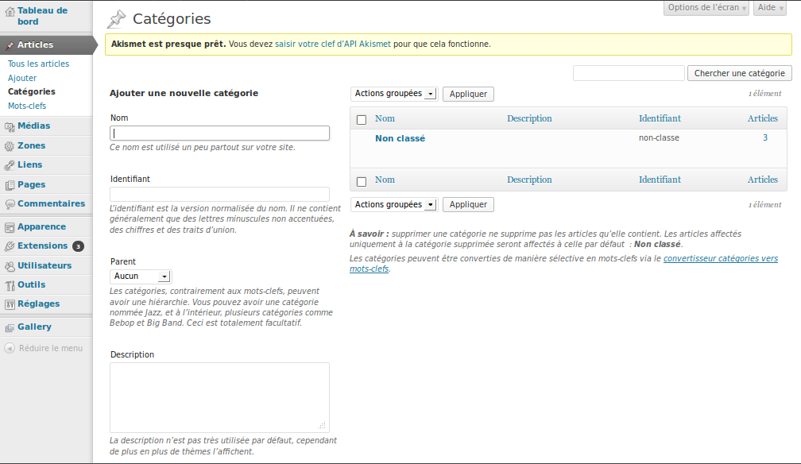
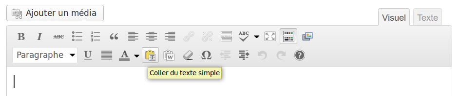
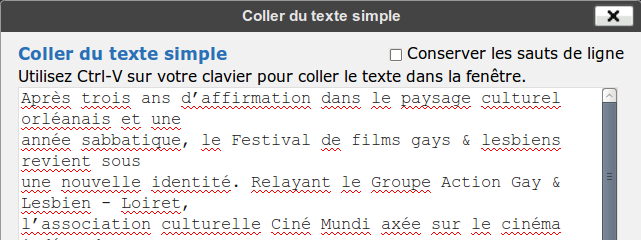
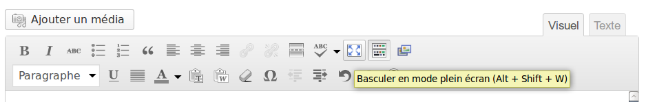
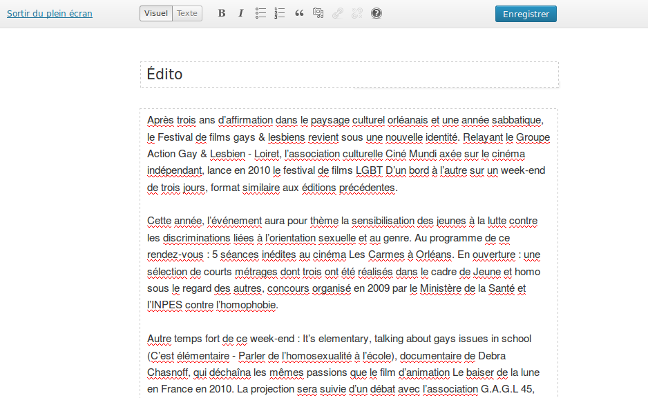
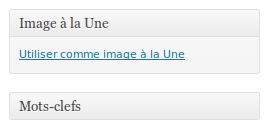
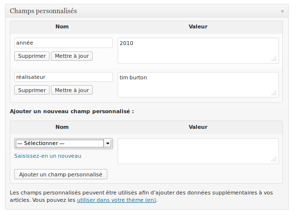
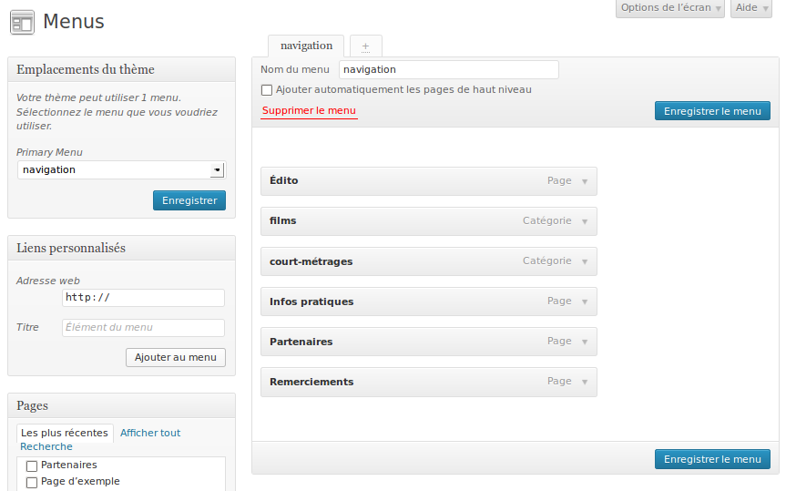
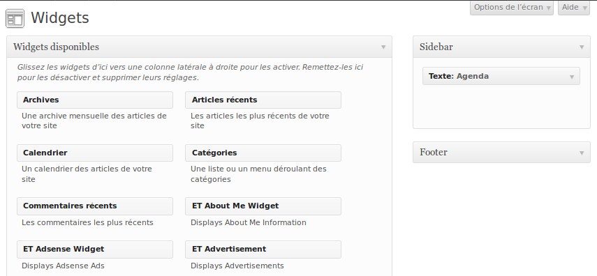
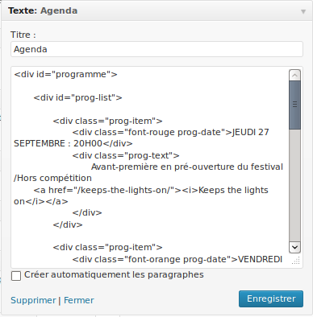

En terme de méthodologie, le descriptif suivant correspond à un mini cahier des charges ( le rôle du cahier des charges étant d’exprimer le besoins du client et de spécifier les contraintes - techniques, d’organisation, de style ).
Il s’agit de créer un site pour un évenement culturel ponctuel.
Cet évenement est un festival de cinéma consacré à la thématique LGBT se déroulant sur 3 jours.
Il présente une selection de fils et courts métrages en mettant particulièrement un film en avant.
Vous disposerez de contenu textuel ( non mis en forme ) et d’images ( dont les tailles sont susceptibles de varier ) que vous devrez intégrer pour le web à l’aide de la plateforme Wordpress.
édito, films, courts métrages, infos pratiques, partenaires, remerciements.
Par défaut, un thème wordpress contient plusieurs modèles de pages ( cliquez sur chaque lien afin de consulter chaque modèle en ligne :
Les films et courts métrages devront être saisies sous la forme d’articles. Vous créerez deux catégories “films” et “court-métrages” afin de différencier les deux types de contenus.
L’avantage d’utiliser les articles de wordpress et que vous disposez du modèle de page des catégories qui permettra de lister tous les articles correspondant à la catégories “films” d’un côté et tous les articles correspondant à la categorie “courts-métrages” de l’autre côté.
Les informations relatives aux partenaires, remerciements et infos pratiques pourront être saisies sous la forme de pages statiques.
Avant de réaliser la maquette, vous devrez récuperer le contenu textuel et les images fournies par le client disponible en annexe.
Consulter cet exemple afin de visualiser le travail à réaliser pour cet étape.
Vous devrez réaliser un mockup[1] pour les pages suivantes :
Chaque page devra contenir le titre du site ( “Festival LGBT”) ainsi que le menu.
Rappelez vous que les consignes données dans la présentation du projet relatives au menu, au programme et aux films/courts-métrages.
Vous utilisez le service en ligne mockflow qui vous permettra de réaliser vos maquettes. Consultez auparavant les quelques exemples fournies afin de vous rendre compte de ce qui est possible de faire avec cet outil.
Se rendre sur le site francophone de Wordpress : http://www.wordpress-fr.net/ et télécharger la dernière version ( 3.5 ).
Créer un répertoire nommé “festival_cinema” ( sans accent et sans espaces ) dans lequel vous devrez décompresser les fichiers de wordpress. Vérifiez bien que le fichier wp-config-sample.php se trouve à la racine du dossier “festival_cinema”.
Renommer le fichier wp-config-sample.php en wp-config.php et éditer le pour effectuer es modifications suivantes :
// ** Réglages MySQL - Votre hébergeur doit vous fournir ces informations. ** //
/** Nom de la base de données de WordPress. */
define('DB_NAME', 'votre_nom_de_bdd');
/** Utilisateur de la base de données MySQL. */
define('DB_USER', 'votre_utilisateur_de_bdd');
/** Mot de passe de la base de données MySQL. */
define('DB_PASSWORD', 'votre_mdp_de_bdd');
/** Adresse de l'hébergement MySQL. */
define('DB_HOST', 'localhost');
/** Jeu de caractères à utiliser par la base de données lors de la création des tables. */
define('DB_CHARSET', 'utf8');
Modifier également la ligne permettant de spécifier le prefix de table ( dans le cas ou votre base de données contient déjà au moins une installation de Wordpress, le préfixe permets de distinguer les tables entre différentes installation.
/**
* Préfixe de base de données pour les tables de WordPress.
*
* Vous pouvez installer plusieurs WordPress sur une seule base de données
* si vous leur donnez chacune un préfixe unique.
* N'utilisez que des chiffres, des lettres non-accentuées, et des caractères soulignés!
*/
$table_prefix = 'wp_festival_';
Avant de saisir les articles, il faut créer les catégories “films” et “courts-métrages”.
Menu > Articles > Catégories

Les titres devront être saisies en minuscule, la première lettre en capitale
Les articles devront être insérés via le raccourci “copier du texte simple” dont la fonction est de supprimer tout élement de formatage.

je vous conseille de décocher l’option “Conserver les sauts de lignes” qui a pour effet d’insérer un saut de ligne entre chaque ligne.

Vous devrez ensuite reformatter le texte en ajoutant des paragraphes. Utilisez le mode “plein-écran” pour plus de confort.

Et insérer ensuite les paragraphes :

Pour optimiser le poids des images vous utilisez le service Yahoo Smushit avant de les uploader.
Les images devront êtres insérées en tant qu’”image à la une” :

Les informations relatives au réalisateur du films, aux interpretes etc … doivent être saisies avec les champs personnalisés ( nous verrons par la suite comment les intégrer dans le code PHP dans le modèle de page des articles) :

Comme indiqué plus aut, vous utiliserez les pages pour saisir les rubriques suivantes : “Informations pratiques”, “partenaires”, “remerciements”.
Menu > Apparence > Menus

Nous allons utiliser l’un des widgets intégrés à wordpress pour ajouter le programme.
Les widgets sont des blocs de contenus qu’il est possible d’afficher ou non. Les thèmes de Wordpress contiennent des zones à widgets ( le plus souvent dans la barre latérale, mais on en trouve également dans le pied de page).
Wordpress possède plusieurs widgets par défaut : liste des catégories du sites, liste des pages statiques, liste des derniers articles, liste de liens... Il est possible d’ajouter de nouveaux widgets ( il s’agit en fait de plugins qui ajoutent des widgets supplémentaires à votre Wordpress) et même de créer ses propres widgets.

Les widgets ajoutés dans les zones prévues à cet effet sont présents sur toutes les pages ( ce comportement est modifiable ). Comme nous souhaitons que le programme soit affiche sur l’ensemble des pages, cela peut être un moyen commode pour intégrer le programme.
Vous trouverez un widget nomme “texte” dont le rôle est de définir des blocs de texte. Ce widget peut également contenir du HTML :). Glissez-déposez le widget texte dans la zone correspondant à la barre latérale et insérer le code HTML que vous aurez édité au préalable. ( le code devrait être absolument validé ).

Table of Contents
=================
1 Festival LGBT
2 Edito
3 agenda
4 courts-metrages
4.1 Intro
4.2 En colo - Pascal-Alex Vincent - France
4.3 Pauline – Céline Sciamma- France – 2009
4.4 Omar - Sébastien Gabriel - France - 2009 - 9 minutes
4.5 Odile - Bénédicte Delgéhier - France - 2006- 10 minutes
4.6 Os sapatos de Aristeu - René Guerra Luiz - Brésil - 2008
4.7 Cowboy Forever - Jean Baptiste Erreca - France
4.8 American Boy - Patricia & Colette - France
5 films
5.1 It’s elementary, talking about gays issues in school
5.2 ANDER - Réalisé par Roberto Castón
5.3 EL NIÑO PEZ - Réalisé par Lucía Puenzo
5.4 CAN’T THINK STRAIGHT - Réalisé par Shamim Sarif
6 infos pratiques
7 remerciements
8 partenaires
1 Festival LGBT
~~~~~~~~~~~~~~~~
Festival de films gays et lesbiens
2 Edito
~~~~~~~~
Après trois ans d’affirmation dans le paysage culturel orléanais et une
année sabbatique, le Festival de films gays & lesbiens revient sous
une nouvelle identité. Relayant le Groupe Action Gay & Lesbien - Loiret,
l’association culturelle Ciné Mundi axée sur le cinéma indépendant,
lance en 2010 le festival de films LGBT D’un bord à l’autre sur un
week-end de trois jours, format similaire aux éditions précédentes.
Cette année, l’événement aura pour thème la sensibilisation des
jeunes à la lutte contre les discriminations liées à l’orientation
sexuelle et au genre.
Au programme de ce rendez-vous : 5 séances inédites au cinéma
Les Carmes à Orléans.
En ouverture : une sélection de courts métrages dont trois ont été
réalisés dans le cadre de Jeune et homo sous le regard des autres,
concours organisé en 2009 par le Ministère de la Santé et l’INPES
contre l’homophobie.
Autre temps fort de ce week-end : It’s elementary, talking about gays
issues in school (C’est élémentaire - Parler de l’homosexualité à
l’école), documentaire de Debra Chasnoff, qui déchaîna les mêmes
passions que le film d’animation Le baiser de la lune en France
en 2010. La projection sera suivie d’un débat avec l’association
G.A.G.L 45, sur les Interventions en Milieu Scolaire.
Enfin, ce sera aussi l’occasion de découvrir 3 fictions avec Ander, un
long métrage espagnol mettant en scène une histoire d’amour entre
un paysan basque et un immigré péruvien, El niño pez, un surprenant
road-movie lesbien version argentine et I can’t think straight, une
savoureuse comédie britannique qui clôturera cette édition.
Bon festival !
Christel Guillard, coordinatrice générale.
3 agenda
~~~~~~~~~
Vendredi 24 septembre : 20h00
Soirée d’ouverture : séance de courts métrages
Rencontre-débat avec un réalisateur.
Samedi 25 septembre : 19h30
Documentaire :
It’s elementary, talking about gays issues in school
(C’est élémentaire - Parler de l’homosexualité à l’école)
Rencontre-débat avec le Groupe Action Gay & Lesbien – Loiret
sur les interventions en milieu scolaire.
Samedi 25 septembre : 21h45
Fiction : Ander
Dimanche 26 septembre : 16h00
Fiction : El niño pez
Dimanche 26 septembre : 18h00
Fiction : I can’t think straight
4 courts-metrages
~~~~~~~~~~~~~~~~~~
4.1 Intro
==========
Les 3 premiers courts métrages de cette séance font partie des 5 lauréats du concours Jeune et homo sous le regard des autres, dont les scenarii ont été écrits par des jeunes et mis en scène par des réalisateurs. Cette opération contre l’homophobie, a été organisée en 2009 par le Ministère de la Santé, de la Jeunesse, des Sports et de la Vie associative et de l’INPES avec le soutien du groupe Canal+.
4.2 En colo - Pascal-Alex Vincent - France
===========================================
2009 - 8 minutes
Lors d’une séance du jeu « Action ou
vérité ? », deux jeunes garçons, Mathieu
et Maxime, ont pour défi de s’embrasser.
Le baiser va provoquer chez eux un certain émoi.
A partir de ce moment, les ados, témoins de cette scène, font des
allusions plus ou moins directes à l’éventuelle homosexualité
de Maxime. Une révélation surprenante va alors déstabiliser
le groupe, mais surtout le faire réfléchir.
4.3 Pauline – Céline Sciamma- France – 2009
============================================
7 minutes
C’est la mise en scène d’une jeune fille, qui se raconte
face à la caméra : l’enfance joyeuse dans une petite
ville de province où tout le monde se connaît, la révélation
publique et infamante de son homosexualité par un ami de ses
parents, le silence des témoins, la douleur de la solitude, la
possibilité de l’acceptation. Tout cela elle le raconte à une autre
fille, à la caméra, au spectateur. Comme une confidence.
4.4 Omar - Sébastien Gabriel - France - 2009 - 9 minutes
=========================================================
C’est l’histoire d’Omar qui vit dans une cité. Une cité qu’il aime et qui
l’aime mais où la pression est telle qu’il ne peut vraiment assouvir,
ni même révéler, son amour pour Arthur. Jusqu’au
jour où les deux jeunes hommes sont découverts.
4.5 Odile - Bénédicte Delgéhier - France - 2006- 10 minutes
=============================================================
Une boulangerie banale sur une route de
campagne. Derrière le comptoir, Odile, s’ennuie.
Un jour, une horde de motards stoppe devant
la boutique. Le passé va faire irruption dans
sa vie...
4.6 Os sapatos de Aristeu - René Guerra Luiz - Brésil - 2008
=============================================================
17 minutes - VOSTF
Le corps d’un travesti décédé est préparé
pour l’enterrement par d’autres travestis.
Son corps de femme est amené à sa famille,
qui décide de l’enterrer comme un homme.
Une procession de travestis se met en marche
vers la veillée funèbre pour revendiquer
l’identité construite de la défunte.
4.7 Cowboy Forever - Jean Baptiste Erreca - France
===================================================
2006 - 26 minutes
Au cœur du Brésil, dans le monde machiste des
cowboys latinos, les héros de Cowboy Forever
revendiquent leur homosexualité et manient à
merveille le lasso, et pas seulement pour attraper
le bétail...
4.8 American Boy - Patricia & Colette - France
===============================================
2008 - 4 minutes
Comment jouer du genre en chanson ?
Projection suivie d’un débat avec un réalisateur. Un cocktail vous
sera servi à l’issue de la soirée dans l’espace Délicat&Scène.
5 films
~~~~~~~~
5.1 It’s elementary, talking about gays issues in school
=========================================================
(C’est élémentaire - Parler de l’homosexualité à l’école)
Etats-Unis - 1996 - Documentaire
Durée 01h20 - Réalisation : Debra Chasnoff
Premier documentaire à traiter de l’homosexualité expliquée
aux enfants dans les écoles publiques américaines, It’s
elementary suit les interventions des enseignants dans les
classes allant du primaire au lycée. Tourné en 1996, il a fait le
tour des écoles américaines et a gagné de nombreux prix.
Un excellent support didactique à montrer à tous les élèves
et leurs professeurs lorsque l’on appartient au monde de
l’éducation.
Ce film a subi aux Etats-Unis des attaques de la part de
l’ultra-droite chrétienne intégriste et homophobe pour
empêcher sa diffusion sur une chaîne télé.
La projection sera suivie d’un débat avec l’association
G.A.G.L 45 qui organise depuis 2007 des Interventions en Milieu
Scolaire dans le Loiret.
5.2 ANDER - Réalisé par Roberto Castón
=======================================
Espagne - 2009 - 02h08 - VOSTF
Interprétation : Josean Bengoetxea, Eriz Alberdi,
Christian Esquive
Au fin fond du pays basque, Ander, paysan célibataire à la quarantaine
passée, vit avec sa sœur Arantxa et leur mère âgée dans la ferme
familiale. Alors qu’Arantxa doit bientôt se marier et laisser Ander
s’occuper seul de leur mère, celui-ci se casse une jambe.
Pour l’assister dans ses tâches, sa famille embauche José, un
jeune travailleur saisonnier péruvien.
Le nouveau venu va bientôt bouleverser les relations familiales et
surtout troubler de plus en plus Ander...
Considéré comme le Brockback Mountain basque, Roberto
Castón met en scène cette histoire d’amour entre deux hommes
vivant au contact de la nature d’une manière différente. Il laisse
le temps à ses personnages de s’apprivoiser, de se découvrir,
d’évoluer dans le rude paysage de la Biscaye qu’il prend aussi le
temps de filmer...
Ce premier beau long métrage où la simplicité formelle côtoie
la complexité des rapports humains d’une grande intensité, a
remporté l’adhésion du public dans tous les festivals où il a été
projeté.
Prix C.I.C.A.E – Festival International de Berlin (2009)
Violette d’or du meilleur film – Festival Cinespaña - Toulouse (2009)
Grand prix du jury – Festival Cinehorizontes (2009)
5.3 EL NIÑO PEZ - Réalisé par Lucía Puenzo
===========================================
Argentine - 2008 - 01h36 - VOSTF
Interprétation : Inés Efron, Mariela Vitale, Pep Munne
Dans la banlieue cossue de Buenos Aires, Lala, fille d’un juge
dépressif et d’une mère toxicomane, est follement amoureuse
de Guayi, jeune et jolie domestique paraguayenne au service
de la famille depuis l’âge de treize ans. Les deux jeunes filles
projettent de s’enfuir dans le village d’origine de Guayi, au
bord du lac Ypoà où elles pourraient vivre ensemble et laisser
s’exprimer sans contrainte leur désir fusionnel. Mais un
drame familial va brusquement les séparer...
Lucía Puenzo, à qui l’on doit le bouleversant XXY, a choisi
d’adapter elle-même son propre roman écrit huit ans
auparavant où deux jeunes femmes aux physiques opposés et
de classes sociales différentes vont se rencontrer et s’aimer.
Entre chronique sociale, onirisme et thriller, la cinéaste nous
entraîne dans un Thelma et Louise lesbien à travers une
Argentine inconnue et troublante.
5.4 CAN’T THINK STRAIGHT - Réalisé par Shamim Sarif
====================================================
Grande Bretagne - 2007 - 01h20 - Comédie romantique - VOSTF
Interprétation : Lisa Ray, Sheetal Sheth, Antonia Frering
Alors qu’elle est sur le point de se marier, Tala, une jeune
Palestinienne installée à Londres, tombe amoureuse de Leyla,
une jeune Britannique d’origine indienne.
Tout les oppose : Tala est chrétienne et affirmée, Leyla
musulmane et timide.
Et pourtant, les deux femmes succombent lors d’une nuit
passionnée. Mais le poids des cultures, la pression familiale
et le sens du devoir mettront à l’épreuve leur relation et les
forceront à se découvrir elles-mêmes.
Ce premier long métrage de Shamim Sarif, portée par les
deux talentueuses actrices (que l’on retrouve également dans
son autre film The world unseen) est un pur joyau digne des
comédies romantiques anglaises.
Meilleur Film – Festival Gay et Lesbien de Gran Canaria (2009)
6 infos pratiques
~~~~~~~~~~~~~~~~~~
Lieu du festival : Cinéma Les Carmes – 7, rue des Carmes – 45000 ORLEANS
Tarifs : Plein tarif : 7,50 €
Pass Festival : 25 € (5 séances)
Soirée courts métrages : 6 € (vendredi)
2 séances consécutives le samedi ou le dimanche : 12 €
Cartes & réductions acceptées :
Cartes DECOUVERTE & PASSION,
titulaire du PAC étudiant & de la JPASS, tarif – de 26 ans…
Le festival D’un bord à l’autre est organisé par Ciné Mundi.
Association dont l’objectif est de soutenir et de promouvoir le cinéma indépendant en organisant des projections de films, des festivals et autres actions culturelles liées au cinéma d’auteur de tous continents.
Equipe :
Direction artistique : Christel Guillard (Présidente de Ciné Mundi)
Programmation : Christel Guillard en collaboration avec
Françoise Dahmane (Cinéma Les Carmes)
Communication & partenariats : Christel Guillard
Conception graphique : Yannis Bellair
Conception du site internet : rccc
Impression : Prevost Offset
Contacts :
festival.dunbordalautre@gmail.com
www.festivaldunbordalautre.com
7 remerciements
~~~~~~~~~~~~~~~~
- La Région Centre
- La Mairie d'Orléans
- Le cinéma des Carmes
- Le Groupe Action Gay & Lesbien - Loiret
- Citégay
- La dixième Muse
- Têtu
- Yagg.com
- France Bleu Orléans
- Bagdam Espace Lesbien ( Toulouse )
- Cineffable
- Le Festival Tous Courts ( Aix en Provence )
- Les VidéObstinées
8 partenaires
~~~~~~~~~~~~~~
- Région Centre
- Orléans
- Cinéma des Carmes
- GAGL
- Têtu
- La dixième MUSE
- CiteGay
- Yagg.com
- France Bleu
Téléchargez l’archive contenant les images ici.
[1] "Mockup - Wikipedia, the free encyclopedia." 2005. 6 Jan. 2013 <http://en.wikipedia.org/wiki/Mockup>